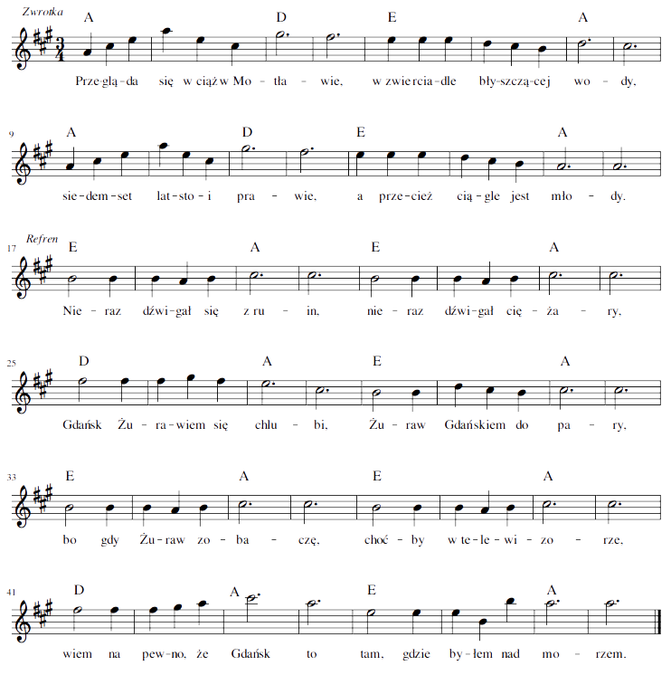

Przegląda się wciąż w Motławie,
w zwierciadle błyszczącej wody,
siedemset lat stoi prawie,
a przecież ciągle jest młody.
Nieraz dźwigał się z ruin,
nieraz dźwigał ciężary,
Gdańsk Żurawiem się chlubi,
Żuraw Gdańskiem – do pary,
bo gdy Żuraw zobaczę,
choćby w telewizorze,
wiem na pewno, że Gdańsk to
tam, gdzie byłem nad morzem.
Gdy idziesz Długim Pobrzeżem,
on ci się kłania i czeka,
a dumne dwie jego wieże
witają ciebie z daleka.
Nieraz dźwigał się z ruin,
nieraz dźwigał ciężary,
Gdańsk Żurawiem się chlubi,
Żuraw Gdańskiem – do pary,
bo gdy Żuraw zobaczę,
choćby w telewizorze,
wiem na pewno, że Gdańsk to
tam, gdzie byłem nad morzem.
|
 melodia: Marcin Witosławski |